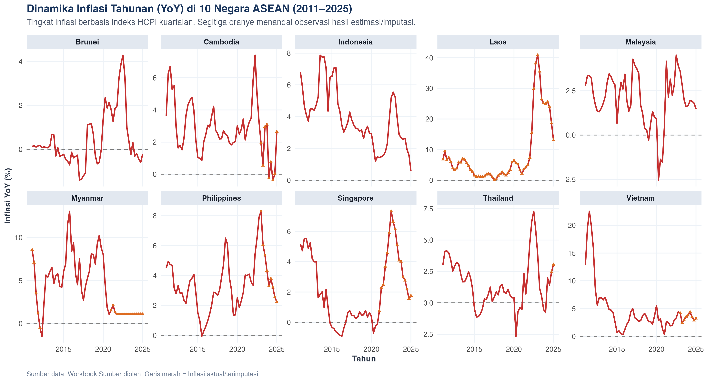
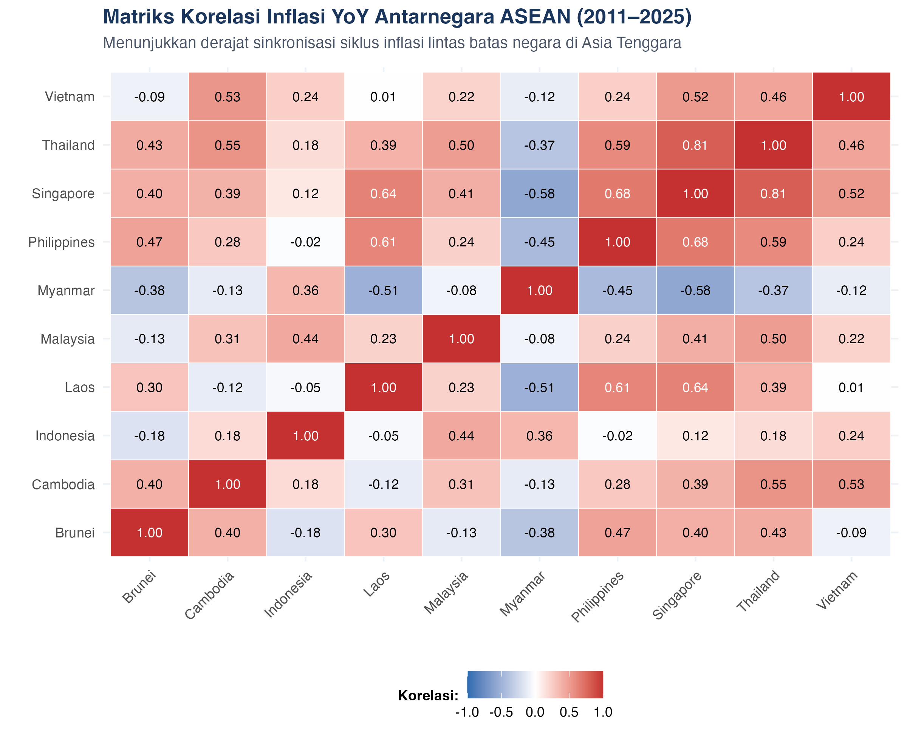
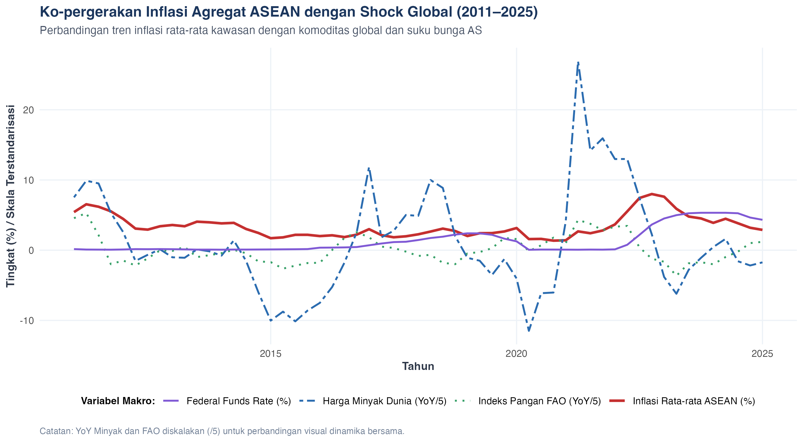
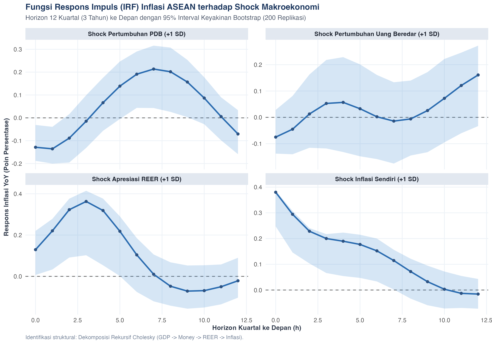
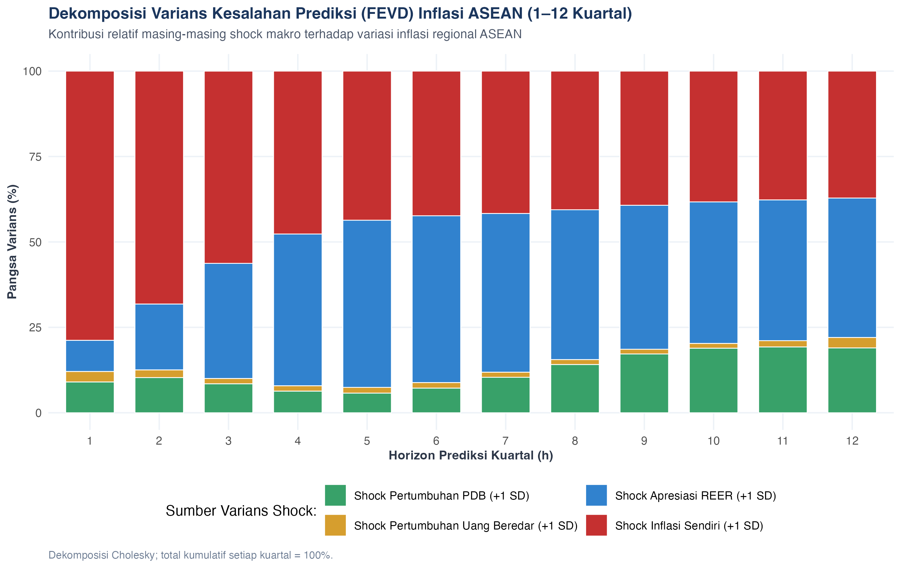

Kawasan Asia Tenggara (ASEAN) merupakan salah satu episentrum pertumbuhan ekonomi paling dinamis di dunia. Namun, integrasi perdagangan internasional dan keterbukaan pasar modal yang tinggi membuat negara-negara anggota ASEAN sangat rentan terhadap goncangan harga global (global commodity shocks) dan volatilitas siklus suku bunga bank sentral global, terutama Federal Reserve Amerika Serikat. Selain itu, dinamika domestik seperti ekspansi uang beredar (money supply), laju pertumbuhan output riil (PDB), dan fluktuasi nilai tukar efektif riil (REER) memainkan peran sentral dalam menentukan pergerakan inflasi.
Penelitian ini menyusun analisis empiris komprehensif mengenai mekanisme pembentukan dan transmisi inflasi di 10 negara ASEAN, menggabungkan data makro domestik dan variabel eksternal global dalam frekuensi kuartalan berstandar tinggi.
Kerangka teoritis riset ini berakar pada teori inflasi struktural dan moneter:
Penelitian menggunakan dataset kuartalan terstandarisasi untuk 10 negara ASEAN: Indonesia, Malaysia, Brunei Darussalam, Thailand, Singapore, Philippines, Vietnam, Cambodia, Laos, dan Myanmar. Variabel mencakup HCPI (Indeks Harga Konsumen Harmonisasi), Pertumbuhan PDB riil, Pertumbuhan Broad Money, REER, Indeks Pangan Global FAO, Federal Funds Rate, dan Harga Minyak Mentah Dunia.
Tingkat inflasi dihitung secara ketat dari perubahan indeks HCPI:
inflation_yoy = 100 * (hcpi_q / lag(hcpi_q, 4) - 1)
inflation_qoq = 100 * (hcpi_q / lag(hcpi_q, 1) - 1)
Untuk data tahunan (PDB dan Money Growth), kami menerapkan algoritma Denton-Cholette First-Difference Minimization tanpa indikator eksternal. Algoritma ini menjamin bahwa rata-rata 4 kuartal dalam setiap tahun secara eksak sama dengan nilai tahunan benchmark (maksimum deviasi < 1e-10), menghilangkan diskontinuitas lonjakan antar-tahun tanpa membagi rata angka pertumbuhan dengan 4.
Missing values ditangani dengan metode imputasi transparan: trailing growth extrapolation untuk observasi akhir HCPI, backward fallback untuk REER Myanmar pra-unifikasi 2012, dan moving average 8 kuartal untuk data Money Growth negara tertentu. Seluruh 191 titik data yang diimputasi diaudit secara eksplisit pada sheet Imputation_Audit dan diberi tanda kualitas data_quality_flag.


Berdasarkan kriteria Schwarz Information Criterion (SC/BIC), lag optimal yang dipilih secara parsimonious adalah p = 2 kuartal. Estimasi dilakukan pada Model Regional VARX(2) dan Dynamic Panel Fixed Effects.
| Model | Regressor | Estimasi Koefisien | Std. Error | t-statistic | p-value | Keterangan Signifikansi |
|---|---|---|---|---|---|---|
| Regional VARX(2) | inflation_yoy.l1 |
0.7746 | 0.1099 | 7.050 | 0.0000 | Signifikan 1% |
| Regional VARX(2) | gdp_growth.l1 |
-0.1767 | 0.0884 | -2.000 | 0.0519 | Signifikan 10% |
| Regional VARX(2) | money_growth.l1 |
-0.1116 | 0.1497 | -0.746 | 0.4598 | Tidak Signifikan |
| Regional VARX(2) | reer_yoy.l1 |
0.1426 | 0.0562 | 2.536 | 0.0149 | Signifikan 5% |
| Regional VARX(2) | inflation_yoy.l2 |
-0.0492 | 0.1020 | -0.483 | 0.6317 | Tidak Signifikan |
| Regional VARX(2) | gdp_growth.l2 |
0.2275 | 0.0913 | 2.492 | 0.0166 | Signifikan 5% |
| Regional VARX(2) | money_growth.l2 |
0.1050 | 0.1431 | 0.734 | 0.4672 | Tidak Signifikan |
| Regional VARX(2) | reer_yoy.l2 |
0.0157 | 0.0540 | 0.290 | 0.7729 | Tidak Signifikan |
| Regional VARX(2) | const |
0.4665 | 0.4260 | 1.095 | 0.2796 | Tidak Signifikan |
| Regional VARX(2) | oil_yoy |
0.0114 | 0.0031 | 3.626 | 0.0008 | Signifikan 1% |
| Regional VARX(2) | fao_yoy |
0.0236 | 0.0112 | 2.103 | 0.0413 | Signifikan 5% |
| Regional VARX(2) | ffr_change |
1.1712 | 0.2157 | 5.429 | 0.0000 | Signifikan 1% |
| Panel Fixed Effects | lag(inflation_yoy, 1) |
1.2564 | 0.0379 | 33.179 | 0.0000 | Signifikan 1% |
| Panel Fixed Effects | lag(inflation_yoy, 2) |
-0.3771 | 0.0379 | -9.948 | 0.0000 | Signifikan 1% |
| Panel Fixed Effects | lag(gdp_growth, 1) |
0.0076 | 0.0163 | 0.466 | 0.6411 | Tidak Signifikan |
| Panel Fixed Effects | lag(money_growth, 1) |
0.0125 | 0.0115 | 1.090 | 0.2764 | Tidak Signifikan |
| Panel Fixed Effects | lag(reer_yoy, 1) |
-0.0473 | 0.0112 | -4.213 | 0.0000 | Signifikan 1% |
| Panel Fixed Effects | oil_yoy |
0.0020 | 0.0022 | 0.941 | 0.3472 | Tidak Signifikan |
| Panel Fixed Effects | fao_yoy |
0.0160 | 0.0089 | 1.793 | 0.0735 | Signifikan 10% |
| Panel Fixed Effects | ffr_change |
0.5768 | 0.1624 | 3.551 | 0.0004 | Signifikan 1% |
ffr_change) memiliki koefisien positif yang sangat kuat dan signifikan (estimasi = 1.171, t = 5.43, p = 2.46e-06). Pengetatan moneter AS mentransmisikan imported inflation ke ASEAN melalui pelemahan mata uang lokal.


Hasil FEVD menunjukkan bahwa pada horizon 1 kuartal, 78.8% variasi inflasi didorong oleh shock internalnya sendiri. Namun, pada horizon 4 kuartal (1 tahun), kontribusi shock REER melonjak drastis hingga 44.4%, melampaui shock PDB (6.3%) dan Money Growth (1.6%). Hal ini membuktikan bahwa stabilitas nilai tukar merupakan faktor paling dominan dalam variasi inflasi jangka menengah di ASEAN.
Otoritas moneter di kawasan ASEAN direkomendasikan untuk menerapkan bauran kebijakan terpadu (Integrated Policy Framework): mengombinasikan suku bunga acuan untuk mengelola ekspektasi domestik, intervensi pasar valas yang terkalibrasi untuk menstabilkan REER, serta penguatan jaring pengaman perdagangan regional (seperti Local Currency Settlement / LCS) guna mengurangi ketergantungan pada volatilitas dolar AS.
output/ASEAN_Inflation_Quarterly_Final.xlsxoutput/Data_Audit.xlsxoutput/ASEAN_Inflation_Quarterly_Final.csvoutput/ASEAN_Imputation_Audit.csvoutput/ASEAN_Disaggregation_Audit.csv